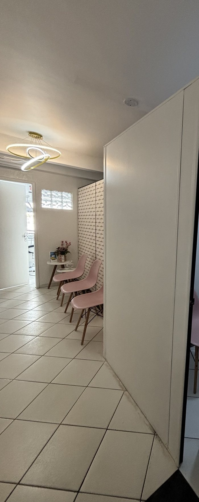

4,9 no Google, em 65 avaliações. A Dra. Sonia responde a cada avaliação recente em primeira pessoa; aqui, cada resposta aparece junto da avaliação a que ela respondeu.
Nota e total lidos na ficha do Google em 11/10/2026. As 15 avaliações lidas para esta prévia têm cinco estrelas.
Lado a lado
Avaliação e resposta
★★★★★Tratamento com uma ótima profissional e bem descontraído, já que tenho pavor a máquina de dentista
A resposta dela
“[…] que alegria saber que você se sentiu descontraído, mesmo com o receio! Muito obrigada pela confiança. Foi um prazer cuidar de você!”
Sonia
★★★★★Atendimento da mais alta qualidade técnica, acolhedor, humano e com estrutura física confortável!
A resposta dela
“Fico muito feliz em saber que você se sentiu bem acolhida e confortável. É muito especial para mim poder cuidar de você!”
Sonia
★★★★★Dra Sônia tem um atendimento excelente tb no pós atendimento. Toda vez que entrei em contato, a resposta sempre imediata.
A resposta dela
“Fico muito feliz em saber que ficou satisfeito com o tratamento e com todo o acompanhamento realizado no pós-tratamento. […] Foi um prazer cuidar de você. Muito obrigada pela confiança!”
Sonia
★★★★★Atendimento excelente proporcionando uma experiência de confiança, satisfação e segurança.
A resposta dela
“[…] muito obrigada pela avaliação e, principalmente, pela confiança de tantos anos! É uma alegria saber da sua satisfação.”
Sonia
★★★★★Atendimento humanizado, ambiente acolhedor e o serviço de altíssima qualidade.
A resposta dela
“É gratificante saber que nosso propósito de cuidar com acolhimento, atenção e excelência é percebido por você. Muito obrigada pela confiança!”
Sonia
★★★★★Fui muito bem atendida […]
A resposta dela
“Fiquei feliz em saber que você se sentiu acolhida na clínica. Obrigada pela confiança no meu trabalho!”
Sonia
★★★★★Ambiente muito organizado, os profissionais bastante dedicados. Super indico.
A resposta dela
“Nosso compromisso é continuar oferecendo um atendimento cuidadoso e de qualidade. Será sempre um prazer recebê-la em nossa clínica!”
Sonia
★★★★★Dr. Sônia excelente profissional e ser humano, atendimento maravilhoso.
A resposta dela
“Agradeço pela confiança no meu trabalho e pelo carinho. Sempre será um prazer cuidar da sua saúde e do seu sorriso!”
Sonia
Mais trechos
Outras avaliações
Lorena C.
“[…] me senti muito acolhida e segura, e ela explicou tudo com muita clareza”
Luana A.
“Excelente profissional. Muito competente e tranquila. Ambiente muito acolhedor.”
Moises P.
“Atendimento excelente, profissional com atendimento cordial e atencioso!”
Luan A.
“atendimento excelente e atencioso! Equipe cuidadosa e receptiva […]”
Como ela responde
As palavras dela
cuidaracolhimentoconfiançatodas as etapaspós-tratamento
“É gratificante saber que nosso propósito de cuidar com acolhimento, atenção e excelência é percebido por você.”Resposta da Dra. Sonia no Google · ver na ficha

O corredor da recepção. Foto publicada pelo consultório.
Transparência
Como conferir
Os trechos são curtos, com nome abreviado, e falam do atendimento. Ficaram de fora avaliações que descrevem resultado de tratamento.